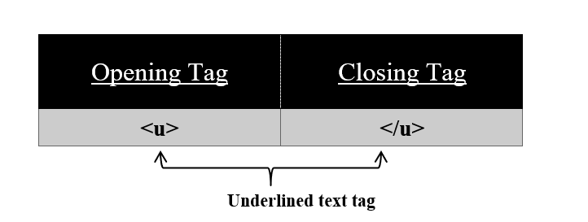

To underline misspelled words use the<u> tag on your HTML page.
Syntax:
<u>
//content
</u>
Using this <u> tag we can underline our misspelled words or text. All the content in between this tag is displayed underlined. <u> tag has also its corresponding </u> tag.